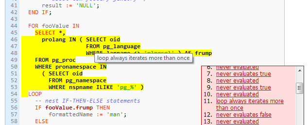

Piggly is a tool to track code coverage of PostgreSQL's PL/pgSQL stored procedures. Code coverage helps you identify untested parts of your code, which makes testing easier. You write tests against your stored procedures and run them with piggly.
See the sample coverage report. Mouse-over the bold code regions to see the tooltips.
Your stored procedures must already be loaded in the database. Configure your database connection in a file named config/database.yml relative to where you want to run piggly. You can also specify the -d PATH to an existing configuration file. The contents of the file follow ActiveRecord conventions:
piggly: adapter: postgresql database: cookbook username: kputnam password: secret host: localhost
Note the connection is expected to be named piggly but you may specify the -k DATABASE option to use a different connection name (eg -k development in Rails). See also example/config/database.yml.
Now you are ready to recompile and install your stored procedures.
$ piggly trace compiling 5 procedures Compiling scramble Compiling scramble Compiling numberedargs Compiling snippets Compiling iterate tracing 5 procedures
This caches the original version (without instrumentation) in piggly/cache so you can restore them later. Piggly will only recompile procedures that it thinks has changed in the database since it last made a copy in piggly/cache.
Important: piggly fetches your code from the database and replaces it (in the database) with the instrumented code. If you run piggly trace twice consecutively, the second time will cause an error because you are trying to instrument the same code twice. You need to run piggly untrace or restore your original stored procedures manually before you can trace them again.
Now you're ready to execute your tests. Make sure your connection is configured to log RAISE WARNING messages to a file -- or you can log them to STDERR and redirect that to a file. For instance you might run:
$ ant test 2> messages.txt $ make test 2> messages.txt etc.
To build the coverage report, have piggly read that file in by executing piggly report < messages.txt, or piggly report -f messages.txt. You don't actually need the intermediate file, you can pipe your test suite directly in like ant test 2>&1 | piggly report.
Once the report is built you can open it in piggly/reports/index.html.
You can install piggly from RubyGems by running:
$ gem install piggly
You can clone the project with Git by running:
$ git clone git://github.com/kputnam/piggly
Copyright (c) 2010 Kyle Putnam
Permission is hereby granted, free of charge, to any person obtaining a copy
of this software and associated documentation files (the "Software"), to deal
in the Software without restriction, including without limitation the rights
to use, copy, modify, merge, publish, distribute, sublicense, and/or sell
copies of the Software, and to permit persons to whom the Software is
furnished to do so, subject to the following conditions:
The above copyright notice and this permission notice shall be included in
all copies or substantial portions of the Software.
THE SOFTWARE IS PROVIDED "AS IS", WITHOUT WARRANTY OF ANY KIND, EXPRESS OR
IMPLIED, INCLUDING BUT NOT LIMITED TO THE WARRANTIES OF MERCHANTABILITY,
FITNESS FOR A PARTICULAR PURPOSE AND NONINFRINGEMENT. IN NO EVENT SHALL THE
AUTHORS OR COPYRIGHT HOLDERS BE LIABLE FOR ANY CLAIM, DAMAGES OR OTHER
LIABILITY, WHETHER IN AN ACTION OF CONTRACT, TORT OR OTHERWISE, ARISING FROM,
OUT OF OR IN CONNECTION WITH THE SOFTWARE OR THE USE OR OTHER DEALINGS IN
THE SOFTWARE.